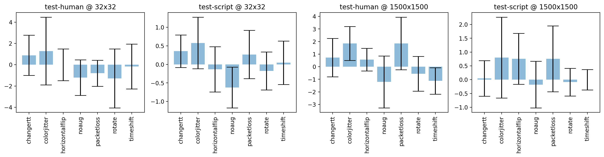

Figure 9: Accuracy difference w/ and w/o Dropout in supervised learning.
import itertools
import matplotlib as mpl
import matplotlib.pyplot as plt
import numpy as np
import pandas as pd
import seaborn as sns
import statsmodels.stats.api as sms
%matplotlib inline
%config InlineBackend.figure_format='retina'
df_with_dropout = pd.concat(
[
pd.read_parquet(
"campaigns/ucdavis-icdm19/augmentation-at-loading-with-dropout/campaign_summary/1684447037/runsinfo_flowpic_dim_1500.parquet"
),
pd.read_parquet(
"campaigns/ucdavis-icdm19/augmentation-at-loading-with-dropout/campaign_summary/1684447037/runsinfo_flowpic_dim_32.parquet"
),
]
)
df_no_dropout = pd.concat(
[
pd.read_parquet(
"campaigns/ucdavis-icdm19/augmentation-at-loading-suppress-dropout/campaign_summary/1684566558/runsinfo_flowpic_dim_1500.parquet"
),
pd.read_parquet(
"campaigns/ucdavis-icdm19/augmentation-at-loading-suppress-dropout/campaign_summary/1684566558/runsinfo_flowpic_dim_32.parquet"
),
]
)
df_tmp1 = df_with_dropout[
[
"flowpic_dim",
"test_split_name",
"aug_name",
"seed",
"split_index",
"acc",
]
].rename(columns={"acc": "withdropout_acc"})
df_tmp2 = df_no_dropout[
[
"flowpic_dim",
"test_split_name",
"aug_name",
"seed",
"split_index",
"acc",
]
].rename(columns={"acc": "nodropout_acc"})
df = pd.merge(
df_tmp1,
df_tmp2,
on=[
"flowpic_dim",
"test_split_name",
"aug_name",
"seed",
"split_index",
],
suffixes=["withdropout_", "nodropout_"],
)
def compute_confidence_intervals(array, alpha=0.05):
array = np.array(array)
low, high = sms.DescrStatsW(array).tconfint_mean(alpha)
mean = array.mean()
ci = high - mean
return ci
df_merged = df.groupby(["flowpic_dim", "test_split_name", "aug_name"]).agg(
{"acc_diff": ["mean", "std", "count", "min", "max", compute_confidence_intervals]}
)
df_merged = df_merged.rename(
columns={"compute_confidence_intervals": "confidence_interval"}
)
df_merged = df_merged.droplevel(0, axis=1)
| mean | std | count | min | max | confidence_interval | |||
|---|---|---|---|---|---|---|---|---|
| flowpic_dim | test_split_name | aug_name | ||||||
| 32 | test-human | changertt | 8.835341e-01 | 3.421913 | 15 | -6.024096 | 6.024096 | 1.894992 |
| colorjitter | 1.285141e+00 | 5.750530 | 15 | -8.433735 | 10.843373 | 3.184537 | ||
| horizontalflip | -9.473903e-16 | 2.694058 | 15 | -4.819277 | 6.024096 | 1.491919 | ||
| noaug | -1.204819e+00 | 3.020642 | 15 | -4.819277 | 3.614458 | 1.672776 | ||
| packetloss | -8.032129e-01 | 2.215345 | 15 | -3.614458 | 3.614458 | 1.226817 | ||
| rotate | -1.285141e+00 | 4.998116 | 15 | -12.048193 | 6.024096 | 2.767864 | ||
| timeshift | -1.606426e-01 | 3.806343 | 15 | -4.819277 | 6.024096 | 2.107882 | ||
| test-script | changertt | 3.555556e-01 | 0.791489 | 15 | -0.666667 | 2.000000 | 0.438312 | |
| colorjitter | 5.777778e-01 | 1.256517 | 15 | -2.000000 | 3.333333 | 0.695836 | ||
| horizontalflip | -1.333333e-01 | 1.104105 | 15 | -2.666667 | 1.333333 | 0.611433 | ||
| noaug | -6.222222e-01 | 0.990964 | 15 | -2.000000 | 0.666667 | 0.548778 | ||
| packetloss | 2.666667e-01 | 1.176489 | 15 | -2.000000 | 2.666667 | 0.651518 | ||
| rotate | -1.777778e-01 | 0.924676 | 15 | -1.333333 | 1.333333 | 0.512069 | ||
| timeshift | 4.444444e-02 | 1.053088 | 15 | -2.000000 | 2.000000 | 0.583181 | ||
| 1500 | test-human | changertt | 7.228916e-01 | 2.762465 | 15 | -4.819277 | 4.819277 | 1.529802 |
| colorjitter | 1.847390e+00 | 2.446646 | 15 | -1.204819 | 6.024096 | 1.354908 | ||
| horizontalflip | 5.622490e-01 | 1.633450 | 15 | -2.409639 | 3.614458 | 0.904575 | ||
| noaug | -1.204819e+00 | 3.727437 | 15 | -6.024096 | 7.228916 | 2.064186 | ||
| packetloss | 1.847390e+00 | 3.779005 | 15 | -3.614458 | 9.638554 | 2.092743 | ||
| rotate | -5.622490e-01 | 2.488664 | 15 | -3.614458 | 4.819277 | 1.378176 | ||
| timeshift | -1.124498e+00 | 1.903171 | 15 | -3.614458 | 2.409639 | 1.053941 | ||
| test-script | changertt | 4.444444e-02 | 1.167460 | 15 | -1.333333 | 2.666667 | 0.646518 | |
| colorjitter | 8.000000e-01 | 2.645151 | 15 | -3.333333 | 6.666667 | 1.464836 | ||
| horizontalflip | 7.555556e-01 | 1.668887 | 15 | -1.333333 | 4.000000 | 0.924199 | ||
| noaug | -1.777778e-01 | 1.521625 | 15 | -2.000000 | 3.333333 | 0.842648 | ||
| packetloss | 7.555556e-01 | 2.150920 | 15 | -2.000000 | 4.000000 | 1.191140 | ||
| rotate | -8.888889e-02 | 0.903842 | 15 | -2.000000 | 1.333333 | 0.500531 | ||
| timeshift | 0.000000e+00 | 0.666667 | 15 | -0.666667 | 1.333333 | 0.369188 |
fig, axes = plt.subplots(nrows=1, ncols=4, figsize=(15, 4))
for ax, (flowpic_dim, test_split_name) in zip(
axes.flatten(), itertools.product((32, 1500), ("test-human", "test-script"))
):
# df_merged.loc[(flowpic_dim, test_split_name)]['mean'].plot(kind='bar', ax=ax)
ax.bar(
list(df_merged.loc[(flowpic_dim, test_split_name)].index),
df_merged.loc[(flowpic_dim, test_split_name)]["mean"],
yerr=df_merged.loc[(flowpic_dim, test_split_name)]["confidence_interval"],
align="center",
alpha=0.5,
ecolor="black",
capsize=10,
)
ax.set_title(f"{test_split_name} @ {flowpic_dim}x{flowpic_dim}")
ax.set_xticklabels(
list(df_merged.loc[(flowpic_dim, test_split_name)].index), rotation=90
)
plt.tight_layout()
/tmp/ipykernel_62018/2491681095.py:13: UserWarning: FixedFormatter should only be used together with FixedLocator
ax.set_xticklabels(list(df_merged.loc[(flowpic_dim, test_split_name)].index), rotation=90)
